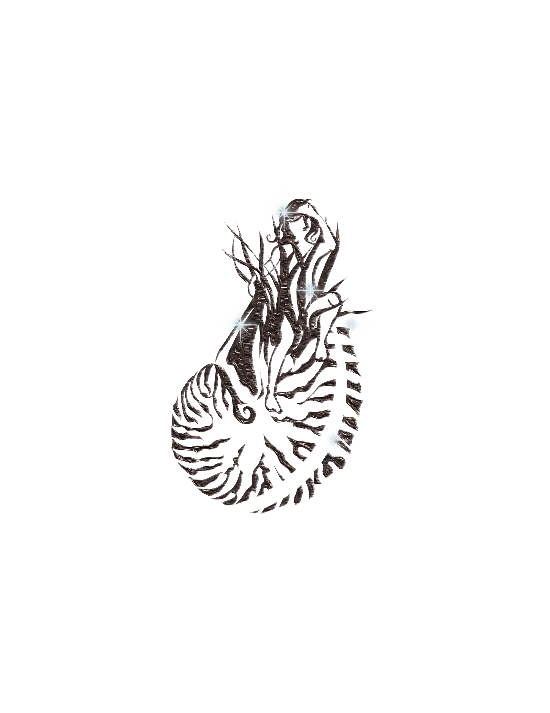
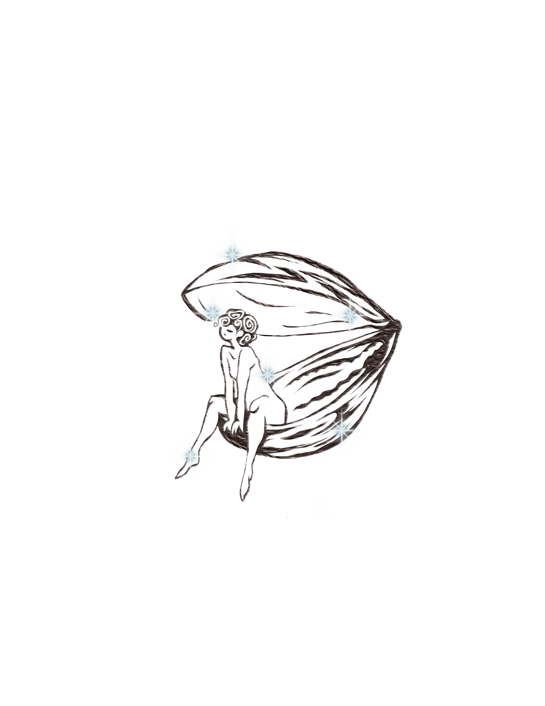
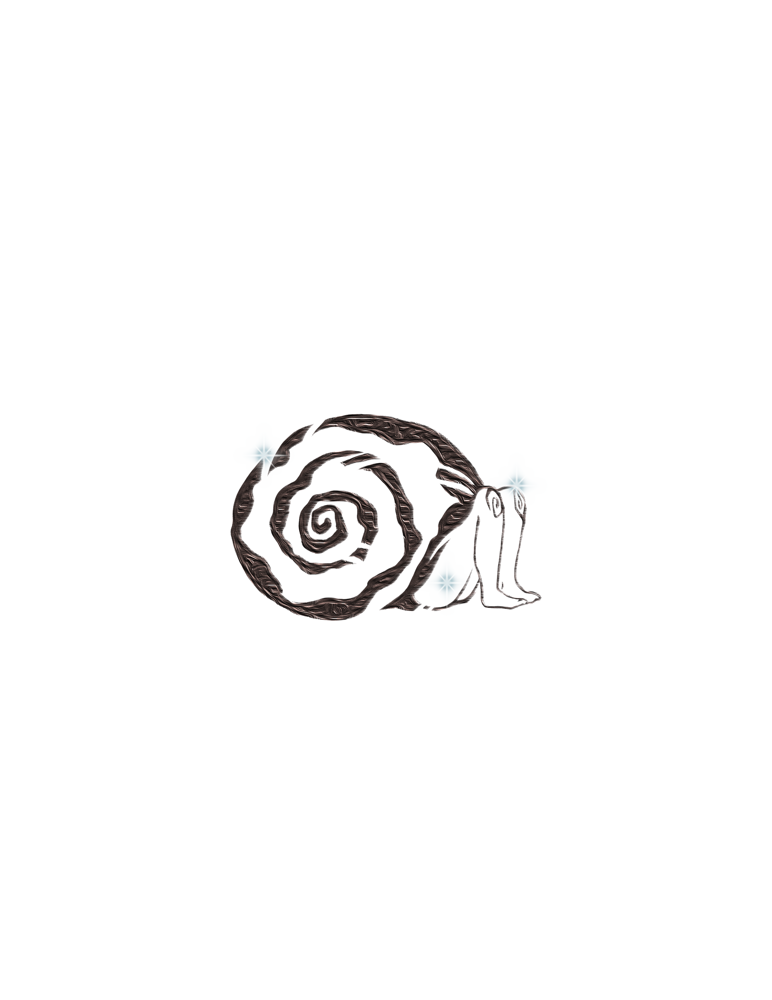

Footnotes on the tide
Thinking about what a website means to me, this project has pushed me to consider the way I perceive the internet itself. “Surfing the web” as a common metaphorical phrase is what compelled me to have an aquatic focus breaking into this new realm of a personal internet garden. I’ve never been good at growing things like plants; although they do remind us that life is both precarious and steady–but maybe I’ve never been very good at navigating that sort of meticulous balance either.
Now, puddles? Those are different. They are fleeting in nature, not necessarily built to grow. In fact, their eventual fate is to shrink. I like that. How terribly beautiful and tragic. But before we get sad about this non-existent water source, I’d like to remind my readers of one of my favourite things ever: TIDE POOLS. They are in a dubious cycle of ebbing and flowing, yet ecosystems manage to thrive in an existence that is ephemeral by nature. I’ve always been the kind who never lingered long in the present, and neither do they. I am a creature of the tide, fueled by the momentary rush and magnetic pull of something cosmic, yet perfectly natural.
Uniting “reason and imagination” metaphors are a simple figure of speech that pairs as an elusive sixth sense. “They often provide us with the only way to perceive and experience much of this world.” Both digital and physical. Prepare to put your thinking caps on. Maybe some goggles too. We’re diving in.
(inspired by 'My Website is a Shifting House...' by Laurel Schwulst)